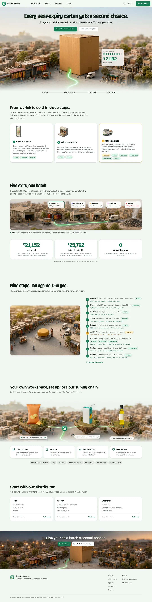
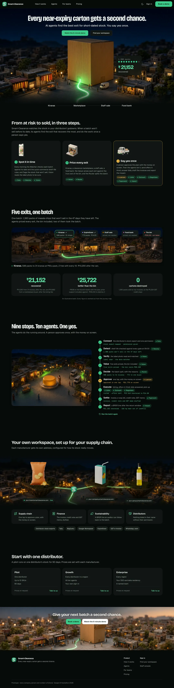
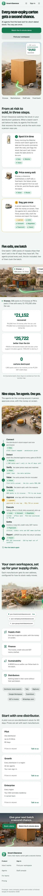
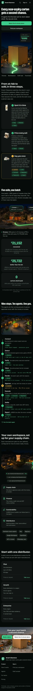

The board's page, with one new section and the agents at work
RecommendedThe board's sections in the board's fonts, plus one short new section under the hero, "From at risk to sold, in three steps", that says what Smart-Clearance does before the street shows it. The nine stops become a live pipeline: the batch walks the rail, each agent lights up and says what it did, and the flow pauses on the human yes in amber.
- Why recommended
- It changes the least of what you said looks fine and matches the board most closely, and it answers both of your notes where they arose: "what Smart-Clearance is about", above the street, and the agentic motion, in the nine stops.
- Trade-off
- A step card is a familiar pattern. The renders and the agents lighting in turn keep the cards from feeling stock.
- The build would touch
design3/site: a new steps section, the stops as a pipeline, the result cards, workspace L5, plans and close L6, and the client removed;- the SvelteKit port: the same sections, plus the pipeline in
motion; - new renders in
design3/system/img.



